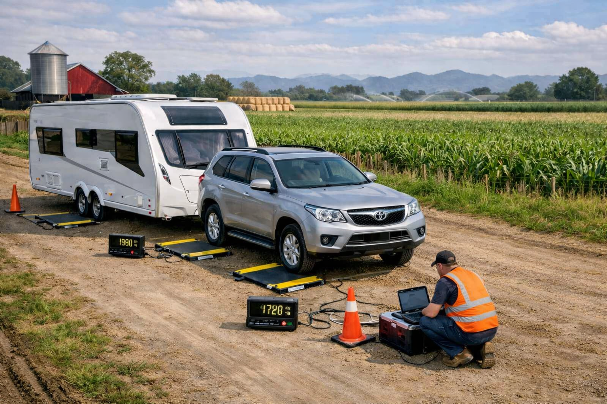

For product enquiries and support please contact our team directly. We are on the road six days a week and can arrange site visits where required, with no consultation fees. Vehicle audit clients should note that we are currently upgrading our drive-on system in the Brisbane workshop to extend testing capacity to 4 tonnes per axle. Audits will recommence in September and bookings taken from the 2nd of September via our contact page.
Email: Rayleen.Raven@outlook.com
Phone: 0455 345 728. If the phone rings out, please send a text and we will call back as soon as possible.
Base: Dalby, Queensland
Office Hours: Monday-Friday, 8:00 AM - 5:00 PM
